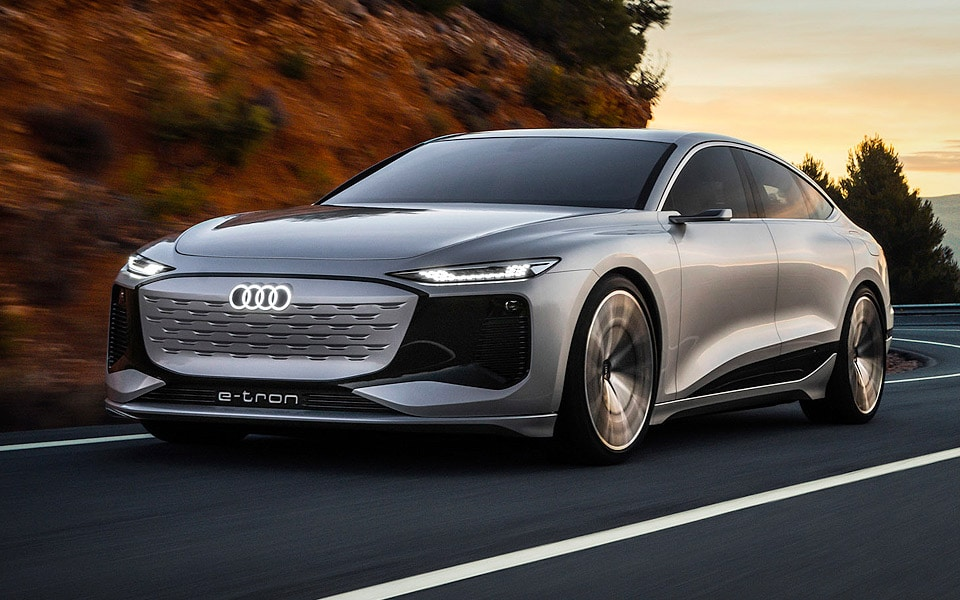
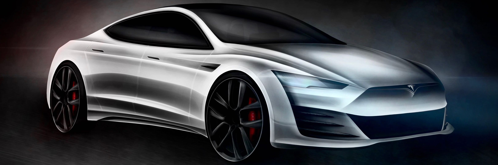

☰
Home page
Why E-car
The design
New Models
Online Magazine
The hottest Models
Debutting in 2022 the new Audi E6 E-tron has captured the mind of many of many electric car enthusiasts. With its' sleak design, the A6 E-tron is said to have the juice to run up to 700 kilometers per WLTP. The centrally-mounted 100-kWh battery supports fast charging at up to 270 kW, which translates to over 300km of range after only 10 minutes of charging. Filling up from 5 to 80 percent can be done in less than 25 minutes.
 
Tesla model 3: An affordable car for the middle class. Looking like a sports car with it’s sleek design, curved profile and racing design. Packed with a variety of Tesla gadgets. That includes a massive touch screen dashboard with a variety of ease of use applications. Taslas very own developed A.I. auto pilot. Practical design.
Home